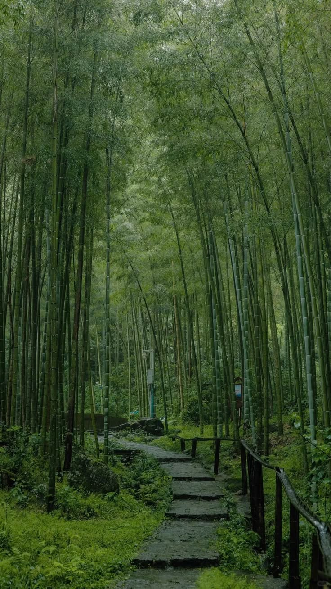
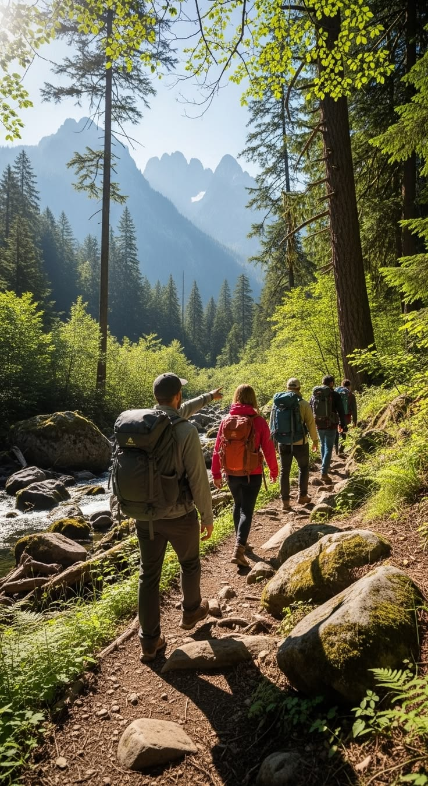
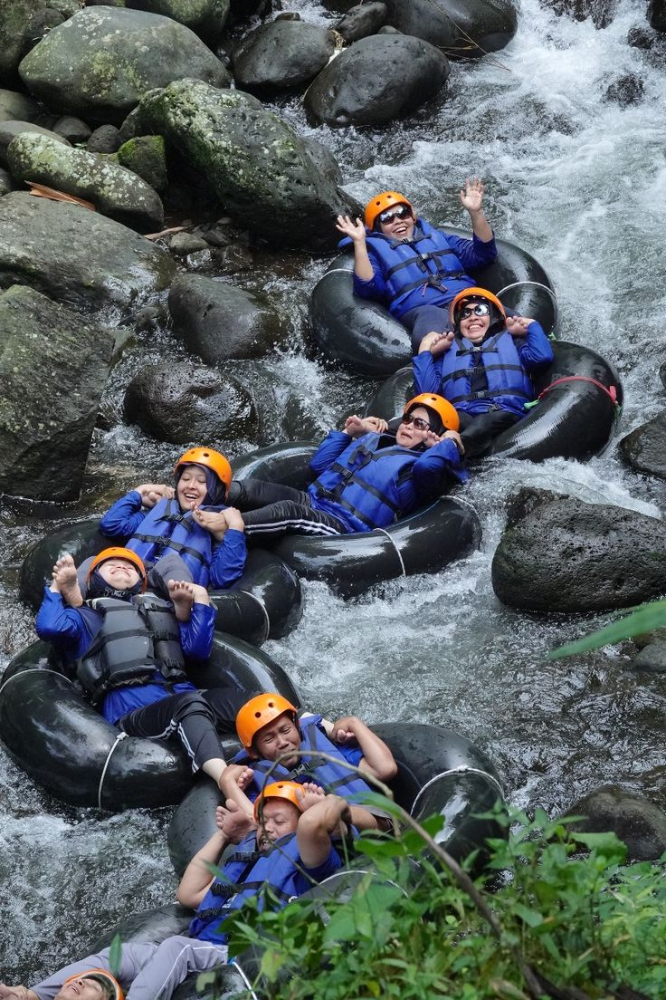
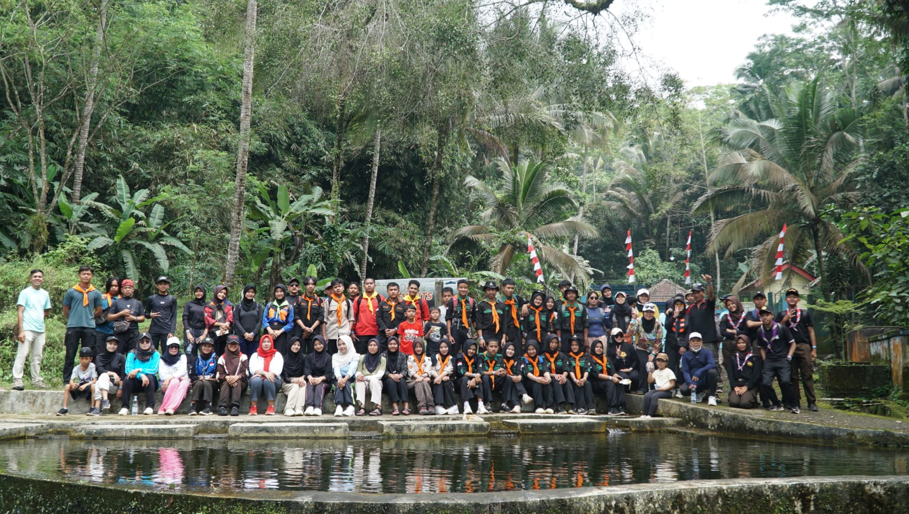
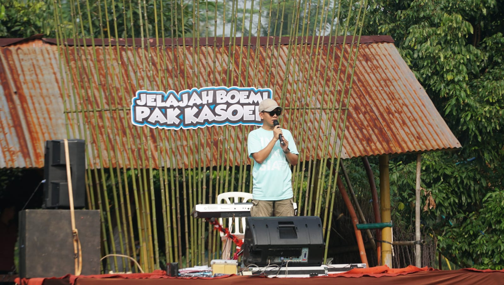
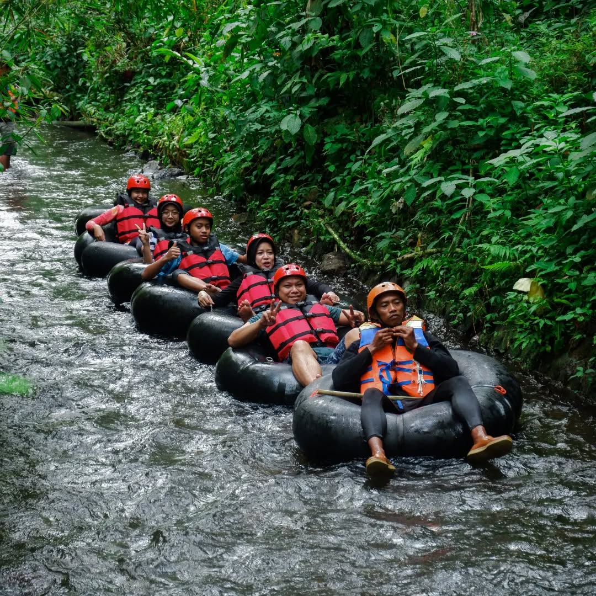
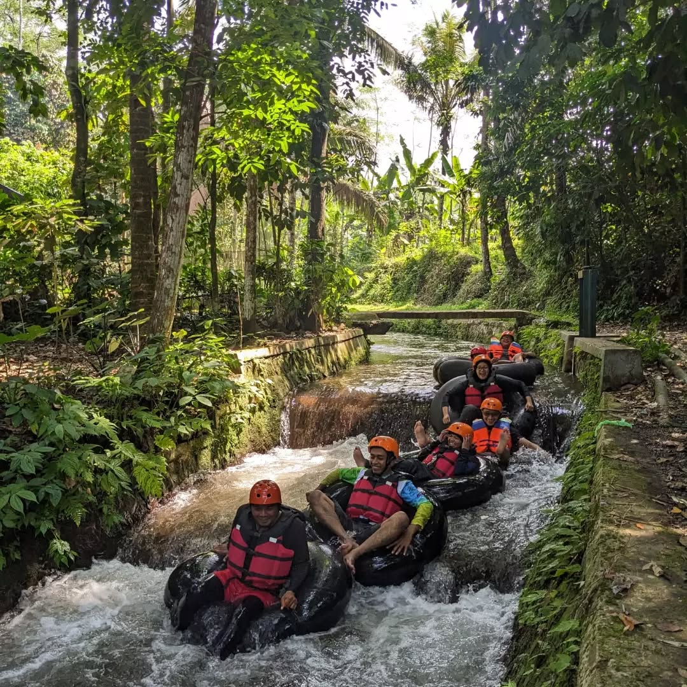
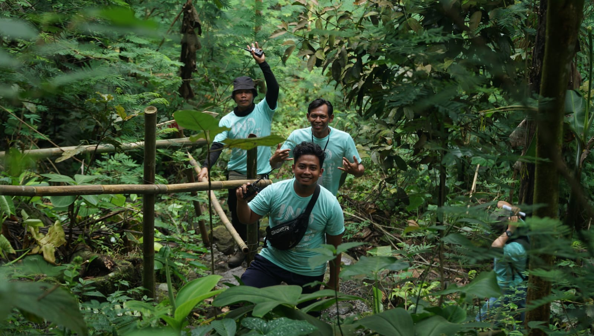
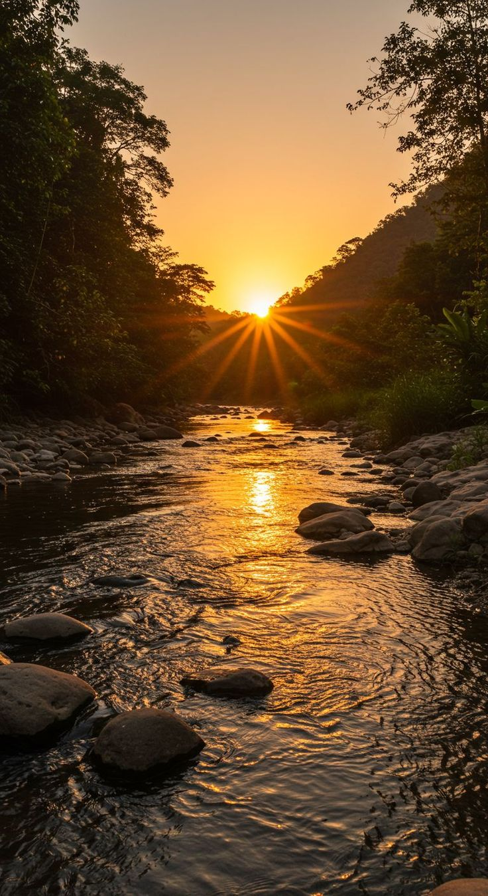

Serayu Larangan adalah lipatan tenang di kaki pegunungan tengah Jawa — curug jernih, jalan setapak berkabut, dan udara yang belum pernah diburu siapa pun.
Serayu Larangan bukan destinasi yang dibuat untuk ramai. Ia sudah ada jauh sebelum peta menandainya — sungai yang mengukir batu selama ratusan tahun, pohon-pohon yang membentuk kanopi alami di atas jalan setapak, dan warga yang masih menyapa dengan tenang.
Di sinilah curug-curug tersembunyi mengalir tanpa terburu-buru, dan setiap sudut terasa seperti ditemukan, bukan dikunjungi.


Setiap curug di Serayu Larangan punya karakter berbeda — dari yang tenang untuk berendam, hingga yang menantang untuk didaki.

Air terjun setinggi 10 meter di Desa Cipaku dengan kolam alami yang lebar dan jernih, cocok untuk berenang sepanjang tahun.
Terletak di Desa Bojong, dikelilingi pepohonan rimbun dengan gemericik air yang menenangkan.
Air terjun dua sisi yang populer di Desa Pengalusan, dengan akses jalan yang mudah dan area untuk memancing.
Hidden gem di Desa Serayu Larangan dengan kolam biru jernih dan tebing bebatuan eksotik.
Enam cara berbeda untuk mengenal Mrebet — pilih sesuai ritme perjalananmu.
Bermalam di bawah kanopi pinus dengan suara sungai sebagai pengantar tidur.
Jalur pendakian ringan hingga menantang menuju punggung Gunung Slamet.
Titik pandang timur menawarkan matahari terbit di atas lautan awan.
Cahaya pagi menembus kabut — surga bagi pencari komposisi lanskap.
Hidangan rumahan warga desa, dimasak dengan bumbu dan resep turun-temurun.
Susur sungai dan tebing rendah bagi yang mencari sedikit adrenalin.
Sebuah koleksi momen — dari kabut pagi hingga cahaya keemasan sore hari.

Curug Utama
Punggung Bukit
Gunung Slamet
Jalur Pinus
Kanopi Hutan
Kabut PagiPasar kuliner lokal, pertunjukan seni tradisional, dan susur sungai bersama.
Berkemah bersama di tepi Telaga Bening, ditemani cerita rakyat setempat.
Upacara adat tahunan sebagai wujud syukur warga kepada alam.
Lomba lari lintas alam 12K melewati hutan pinus dan titik pandang matahari terbit.
Terletak di Desa Serayu Larangan, Kabupaten Purbalingga, Jawa Tengah — mudah dijangkau namun terasa jauh dari keramaian.